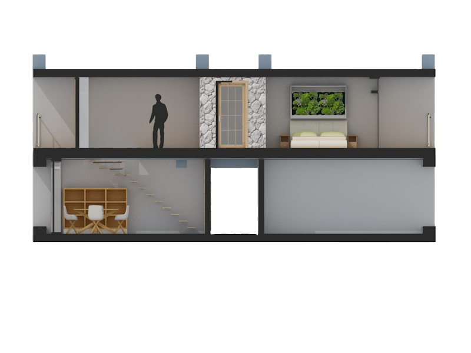

IL PROGETTO
Il progetto riguarda una suite, denominata “Armonie”, ubicata all’interno di un albergo situato tra le colline della Borgogna. Realizzata su due piani, è composta da una cucina abitabile al piano inferiore e, al piano superiore (raggiungibile una scala a gradini di vetro temperato), uno studio, un bagno e una camera da letto.
“Armonie”simboleggia l’armonia di corpo e mente data dal connubio tra l’atmosfera rilassante del luogo e la funzionalità degli elementi che compongono la suite.

Assonometria zona giorno.

Assonometria zona notte.
I materiali e i colori impiegati per la realizzazione del progetto contribuiscono, assieme alle ampie vetrate e ai due balconi, a conferire luminosità e leggerezza. La grande varietà di legno degli arredi, le lastre di vetro delle scale e delle finestre e la parete in finta pietra che ricopre il bagno, suggeriscono il continuo legame dell’uomo con la terra e la natura. I colori pastello chiari, invece, che ricoprono le pareti e il pavimento, riconducono all’aria e alla freschezza.
LOCATION
La Borgogna, regione apprezzata dagli amanti della gastronomia e dei buoni vini, rende felici anche gli appassionati di natura e di edifici antichi. Famosa in tutto il mondo per i prestigiosi vigneti e la cucina autentica, questa bella regione verdeggiante vi sedurrà con i suoi boschi, le grandi vigne, le foreste misteriose, i corsi d'acqua e i grandi laghi.